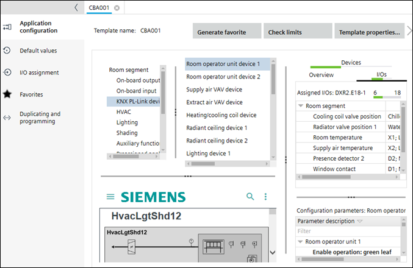

Configuration
Use the Configuration component to create and configure project-specific room application templates and manage default values and I/O assignments.
To open the Application selection, select Building > Building structure > Add device/Add application template.
To open a project-specific room application template select Building > Application & device overview > Go to configuration.
Configuring default values (template)
To add a project-specific room application template select Building > Building structure > Add automation station/Add application template.
Adding project-specific application templates

The Configuration component contains the following tasks.
Task | Description |
|---|---|
You can change room application templates, or select room application templates and room application types to create new ones. You can also import room application types. | |
Contains various sections to configure onboard I/O's, networked field devices, and coordination functions. | |
Provides the possibility to modify default parameters of the room application template. | |
Task for configuring I/O assignments of room application templates. | |
Generating a list of favorites automatically | |
Project navigation view |